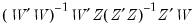
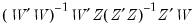

|
|
|
, given by:
in the box labeled K (leave blank for LIML). If no value is entered in this box, LIML is performed.
If you wish to estimate a non-linear equation, then enter the expression for the non-linear equation in the Equation specification box. Note that non-linear K-Class estimation is currently not permitted; only non-linear LIML may be performed.If you do not wish to include a constant as one of the instruments, uncheck the Include a Constant checkbox.Different standard error calculations may be chosen by changing the Standard Errors dropdown menu on the Options tab of the estimation dialog. Note that if your equation was non-linear, only IV based standard errors may be calculated. For linear estimation you may also choose K-Class based, Bekker, or Hansen, Hausman and Newey standard errors.EViews identifies the LIML estimation procedure, along with the choice of covariance matrix type and the list of instruments in the header. This information is followed by the usual coefficient, t-statistics, and asymptotic p-values.The standard summary statistics reported at the bottom of the table are computed using the formulae outlined in “Summary Statistics”. Along with the standard statistics, the LIML minimum eigenvalue is also reported, if the estimation type was LIML.
 , where y is the dependent variable, X are explanatory variables, and Z are instrumental variables.
, where y is the dependent variable, X are explanatory variables, and Z are instrumental variables.  be the smallest eigenvalue of . The LIML estimator of
be the smallest eigenvalue of . The LIML estimator of  is the eigenvector corresponding to
is the eigenvector corresponding to  , with a normalization so that the first element of the eigenvector equals -1.
, with a normalization so that the first element of the eigenvector equals -1. , then the K-Class estimator is the TSLS estimator. If
, then the K-Class estimator is the TSLS estimator. If  , then the K-Class estimator is OLS. LIML is a K-Class estimator with
, then the K-Class estimator is OLS. LIML is a K-Class estimator with  , the minimum eigenvalue described above.
, the minimum eigenvalue described above.